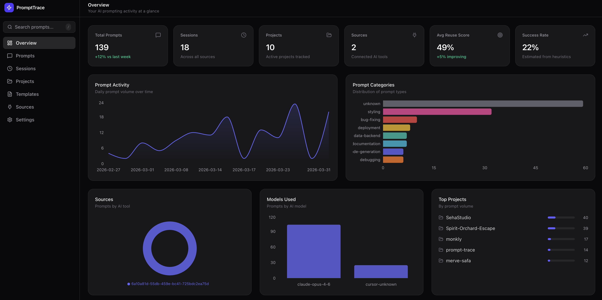

PromptTrace scans your local AI tool histories, scores every prompt on 6 quality dimensions, extracts templates, detects workflow patterns, and generates prompt standards. All data stays on your machine.

PromptTrace goes beyond logging. It analyzes, scores, and transforms your prompts into reusable engineering assets.
Every feature runs locally. Nothing leaves your machine.
Clarity, specificity, constraints, context efficiency, ambiguity, and overall optimization score for every prompt.
Automatically finds prompt patterns you repeat across projects. Normalizes them into reusable templates with placeholders.
Detects repeated prompt sequences across sessions. Bug Triage Pack, Refactor & Test Pack, and more.
Generates best-practice prompt structures from your highest-scoring prompts. Anti-pattern detection included.
Tracks file changes, follow-up depth, session continuation, and abandonment risk for each prompt.
Strengths, weaknesses, anti-patterns, improved versions, and template-friendly rewrites for each prompt.
npx prompttrace auto-detects all installed AI tools
Reads local history files, classifies into 14 categories and 8 intents
6 quality scores, templates extracted, packs detected, standards generated
Library, outcomes, refactor suggestions, export templates
Reads directly from local history files. Adapter-based architecture.
From overview to deep prompt analysis.
Everything stored in a local SQLite database at ~/.prompttrace/data/.
No cloud, no accounts, no API keys. Open source under MIT.
No. Everything runs locally. Data stored in SQLite on disk. No network requests, no telemetry.
13 tools: Claude Code, Cursor, Codex CLI, VS Code Copilot, Windsurf, Zed, Gemini CLI, Copilot CLI, Antigravity, Goose, Kiro, OpenCode, Command Code. Auto-detects which ones are installed.
Rule-based heuristics, no AI. Each prompt gets scored on clarity, specificity, constraints, context efficiency, ambiguity, and optimization. Plus reuse score and success score. All rules are deterministic and documented in the app's Docs page.
No. PromptTrace doesn't call any external APIs. Classification, scoring, and analysis all use local heuristics.
Yes. Open source under MIT license.
Takes less than a minute. No signup required.